在这一章我们将创建一个简单的Bean(Book.java)和两个JSP 页面，一个是创建新书的，另一个是显示它的，我们也会第一次使用struts-config.xml 文件。我们先在你的classes 目录下创建如下Book.java 文件。
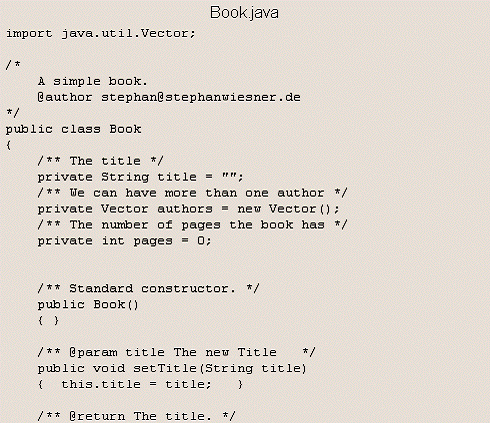
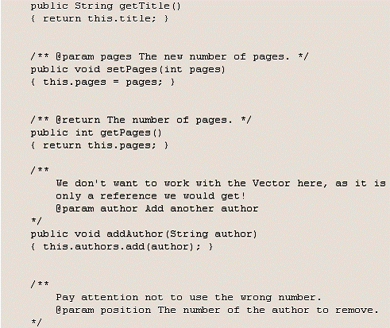
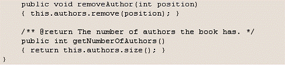
我们还需要创建新书的JSP 页。我们将使用title,auther 和number of pages 三个字段，在此之前我们先要做一些工作，对于一个初学者这将有些难度。在你的BookView 中加上以下内容：
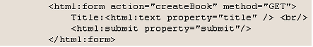
再次运行，你将得到图5 所示内容，如果没有错，那你需要重启tomcat；如果错误不一样，没关系，因为他都是没有在配置文件中找到mapping 路径。
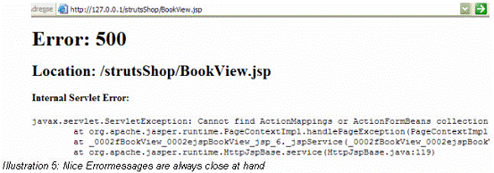
接下来我们需要第二个JSP 页面CreateBook.jsp,代码如下：
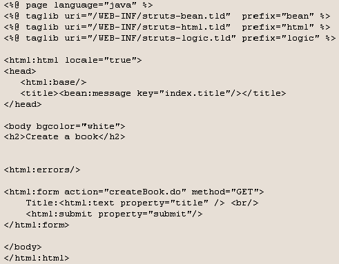
在classes 目录下创建一个BookAction 文件：
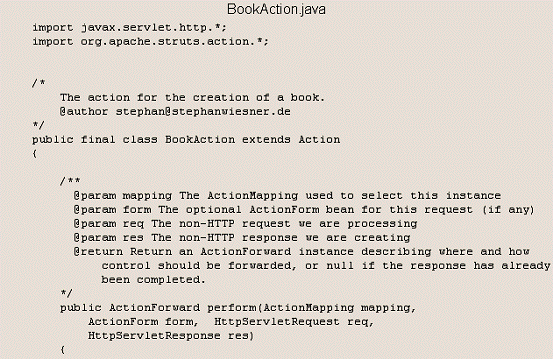
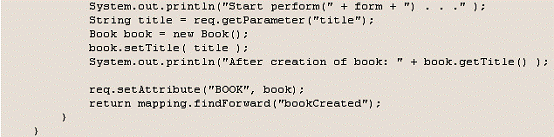
它没按照struts 要求编写仅仅创建一本书并给它标题。然后编写你的struts-config.xml：
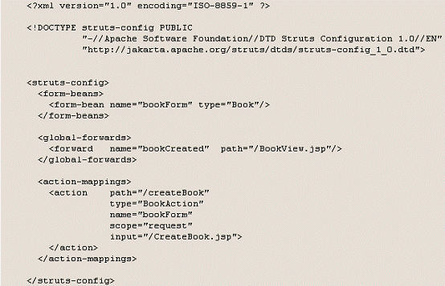
我们希望在struts 中在bookForm 和Book 间建立连接。而且我们还用bookCreated 定义了一个到BookView.jsp 的转发。最后我们用action=createBook.do 属性定义了我们的form做什么。关于do:与接受CreateBook.jsp 输入信息的bookForm 相关的bean，由createBook命令创建。
按图6 编译你的类。由于我是初手，在这里遇见很多问题，所以耽误了很久，不过它让你学到很多东东。比如：javax.servlet 要用到servlet.jar 包；javac 后跟a.java, 而java后跟a；还有我遇见了很原文提到的问题，很多都是由于自己编写(没有copy)而造成的马虎。
希望大家也能引起注意，到此除了ActionForm 我们都已用到了。
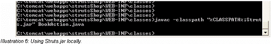
编译成功后，在你的classes 目录下会增加两个文件：Book.class 和BookAction.class.重启你的tomcat(每次改动config 文件你都需要重启，改动注册表需要重启机器)。现在在你的浏览器里登陆CreateBook.jsp，如图7:
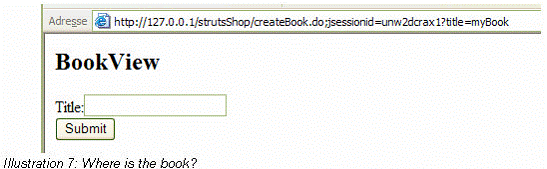
当你填写后提交，另你失望的是什么也没有得到。这是由于我们并没有ActionForm bean.